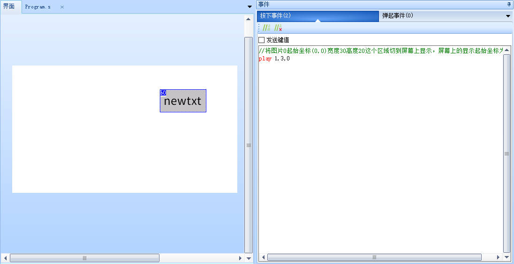
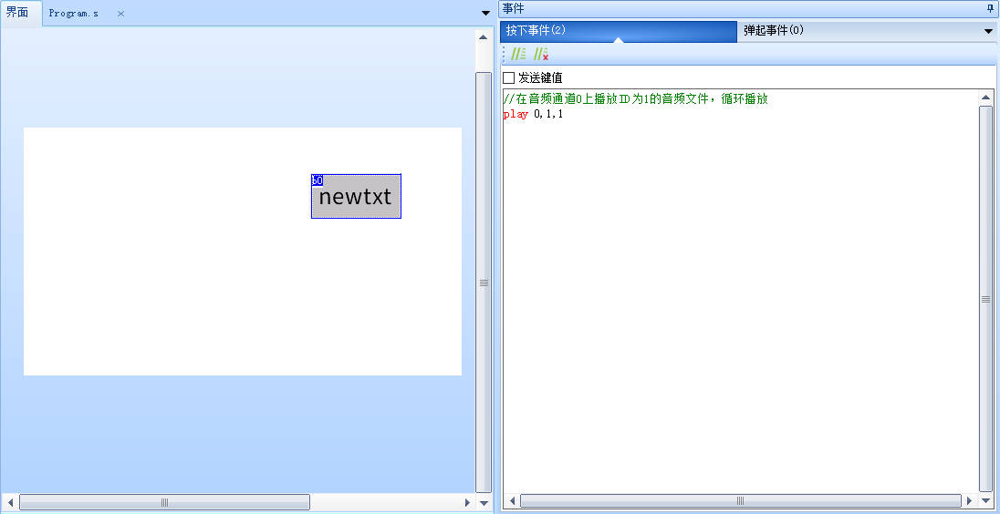

play-音频播放
仅X3,X5系列支持
play ch,audio,loop
ch:音频通道序号
audio:音频ID
loop：是否循环
注意
导入音频请参考: 如何导入音频
play-示例1
//在音频通道1上播放ID为3的音频文件，只播放1次
play 1,3,0

play-示例2
//在音频通道0上播放ID为1的音频文件，循环播放
play 0,1,1

play-c语言示例
单片机通过串口在音频通道1上播放ID为3的音频文件，不循环播放
int ch=1, audio=3, loop=0;
printf("play %d,%d,%d\xff\xff\xff", ch, audio, loop);
注意
如果使用了“play”指令后屏幕黑屏、重启，说明供电不足，请更换更大功率的电源
play指令仅用于配置和启动音频播放，暂停和停止操作请参考： audio0~audio1-音频通道控制 。
play指令控制的是独立于视频之外的音频通道，与视频中使用的音频通道没有关系，也不会产生冲突。
音频播放功能是全局的，不属于某个页面，因此play指令启动播放后，即便是跳转页面，音频依然会继续播放，如果希望离开页面后停止播放，可以在页面的离开事件中使用audio0/audio1系统变量来关闭或暂停指定通道的音频播放状态。
play指令-样例工程下载
演示工程下载链接：